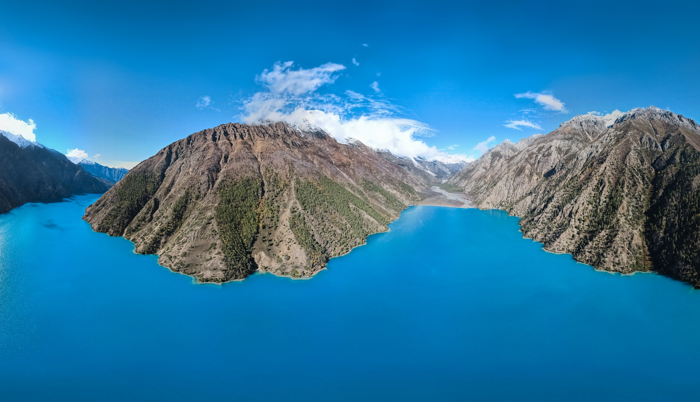

Somewhere
beyond ordinary.
Go beyond the photograph. Above the clouds.
Into a place that changes how you feel.
INFINITE IN POSSIBILITY.
Not just a place you visit.
A place you feel.
Prayer flags in the mountain breeze. The first light over a Himalayan peak. A warm cup of chiya, shared with a stranger. In Nepal, the extraordinary is in the everyday.
अतिथिदेवो भवTreat the guest with reverence.
One country.
More than one world.
Seven provinces. Seventy-seven districts.
Find the landscape, culture and pace that call to you.
 01 / KOSHI
01 / KOSHITouch
the sky.
Everest, tea country and quieter eastern hills.
14 DISTRICTS · 16 PLACE GUIDES ↗ 02 / MADHESH
02 / MADHESHFeel
the connection.
Sacred courtyards, living color and forest paths.
08 DISTRICTS · 12 PLACE GUIDES ↗ 03 / BAGMATI
03 / BAGMATIFollow
your curiosity.
Living heritage, wild forests and Himalayan horizons.
13 DISTRICTS · 16 PLACE GUIDES ↗ 04 / GANDAKI
04 / GANDAKIFind your
reflection.
Still water, mountain trails and villages with stories.
11 DISTRICTS · 18 PLACE GUIDES ↗ 05 / LUMBINI
05 / LUMBINIFind your
stillness.
Sacred gardens, wild forests and hill-country stories.
12 DISTRICTS · 18 PLACE GUIDES ↗
06 / KARNALILet wonder
run wild.
Blue lakes, ancient valleys and the quieter Himalayas.
10 DISTRICTS · 18 PLACE GUIDES ↗ 07 / SUDURPASHCHIM
07 / SUDURPASHCHIMStay
curious.
High meadows, sacred hills and wild grasslands.
09 DISTRICTS · 11 PLACE GUIDES ↗REAL PHOTOGRAPHY & FILMS · DISTRICT GUIDES · ROUTES · YOUR OWN TRAVEL NOTEBOOK
Don’t just look.
Look around.
A mountain lake. A sacred courtyard. A flight of imagination.
Take the controls. Stay a little longer.

Be somewhere else.
Drag to explore · No headset needed
A lake. A thousand perspectives.
Gosaikunda: Acharya Bipin / Wikimedia Commons · CC BY-SA 4.0 · Resized for the web.
Let Nepal
move you.
Press play. Let the landscape do the talking.
Real places, filmed from a different perspective.
One country.
Endless worlds.
Follow your curiosity. From the roof of the world
to the quiet corners you’ll call your own.
Seven provinces.
A thousand stories.
Follow the tea hills east. The mountain lakes west.
There’s always another Nepal to discover.

scenic
WAY HOME
Collect moments.
Not just miles.
The best of Nepal isn’t always on a map. It’s in the paths you wander, the people you meet, and the way you slow down.
Find your
kind of trail.
From gentle village paths to Himalayan expeditions.
Choose the feeling. Then plan the journey.
Mountain journeys need route-specific planning, permits, acclimatization and weather buffers. These are starting points, not trekking schedules.
Come for the mountains.
Stay for the people.
Meet the makers. Share a meal. Listen to the stories.
Let local voices shape your experience of Nepal.
Every season.
A different kind of magic.
Choose the Nepal you want to meet.
Let the seasons set the scene.

Your next chapter
starts with namaste.
A few dreams. A little direction. A journey that feels like you.
YOUR PACE. YOUR PLACES. YOUR STORY.AI-CREATED HIMALAYAN DREAMSCAPEArrive curious.
Travel thoughtfully.
Is Nepal only for trekkers?+
There’s much more beyond the trails: Kathmandu’s courtyards, Pokhara’s lakeside, Lumbini’s monasteries and Chitwan’s wildlife. Our trip builder offers cultural, nature and relaxed journeys as well as walking-focused ideas.
How much time should I allow?+
A week is a starting point for Kathmandu and Pokhara. Ten to fourteen days gives you room for Chitwan or a slower cultural journey. Longer mountain routes need separate planning, acclimatization and weather buffer days.
What should I check before traveling?+
Check entry requirements, permits, weather and transport with the relevant authorities and your local operator. Conditions vary by route. See the Nepal Tourism Board’s planning guide ↗ for a starting point.
How can I travel more thoughtfully?+
Choose locally run stays and qualified local guides, ask before photographing people, respect sacred spaces and take your litter with you. Observe wildlife from a distance and choose activities that keep animals wild.